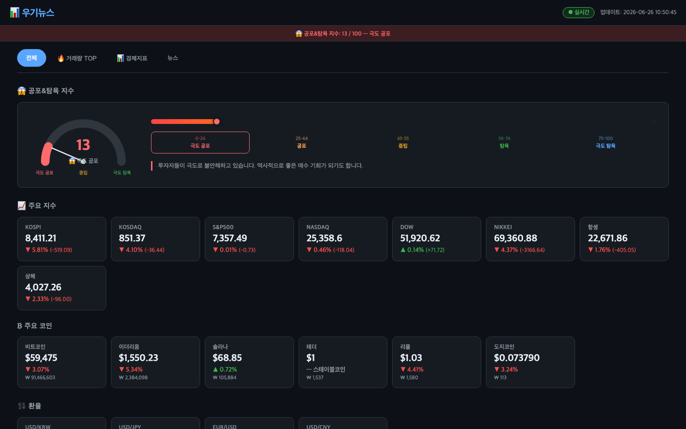
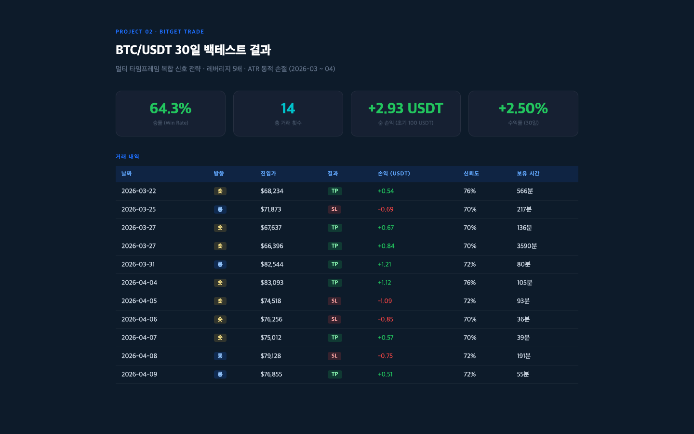
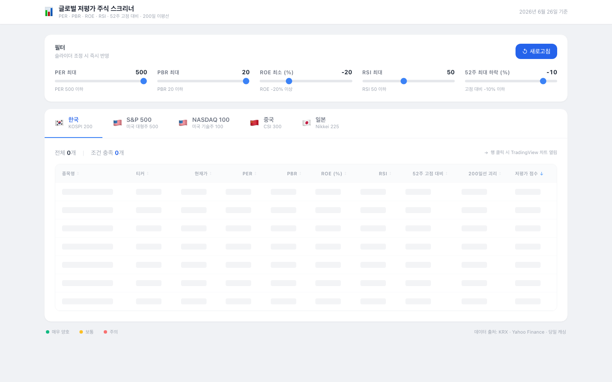
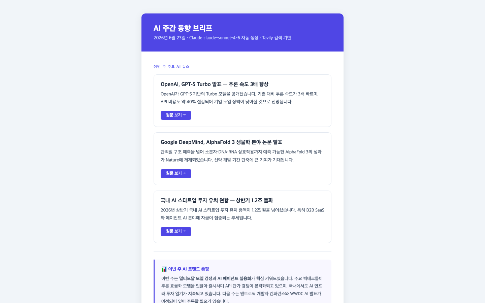

인사이트를 AI로 현실에 구현하는 투자 분석가
저는 전통적인 의미의 개발자나 데이터 사이언티스트가 아닙니다.
투자 시장을 바라보는 저만의 시각과 아이디어가 출발점이고,
AI를 도구로 삼아 그 생각을 실제로 동작하는 시스템으로 만들어냅니다.
"어떤 정보를 어떻게 보고 싶다", "이런 전략이 통할 것 같다" —
그 질문에서 시작해 AI와 함께 직접 설계하고, 검증하고, 운영합니다.
전 세계 금융 시장을 한눈에 파악하기 위한 실시간 경제 대시보드입니다. FastAPI 백엔드가 여러 데이터 소스에서 정보를 수집하고, WebSocket으로 브라우저에 자동 푸시합니다. Docker 컨테이너로 패키징하여 서버 어디서나 즉시 배포 가능하며, API 키 없이도 대부분의 기능이 동작합니다.

Bitget USDT-M 퍼페추얼 스왑 거래소에서 동작하는 완전 자동화 선물 매매 시스템입니다. RSI·MACD·일목균형표·볼린저밴드·ADX 5개 지표의 멀티 타임프레임 신호를 가중 합산하여 진입 신뢰도를 계산합니다. ATR 기반 동적 손절/익절로 시장 변동성에 적응하며, 288개 파라미터 조합 그리드 서치로 최적 파라미터를 도출했습니다.
| 타임프레임 | 가중치 | 역할 |
|---|---|---|
| 1분봉 | 1 | 단기 진입 타이밍 |
| 10분봉 | 2 | 중단기 신호 확인 |
| 30분봉 | 3 | 추세 방향 파악 |
| 1시간봉 | 4 | 주요 추세 판단 (최고 가중치) |

한국·미국·중국·일본 주요 지수 전 종목을 대상으로 PER·PBR·ROE·RSI·52주 고점 대비 5가지 지표를 가중 합산하여 저평가 점수를 산출합니다. React + TypeScript 프론트엔드에서 슬라이더 조정 즉시 클라이언트 사이드 필터링이 적용되며, TradingView 차트와 연동됩니다. 10분 TTL 파일 캐싱으로 yfinance rate limit을 방어하고, 차단 시 이전 캐시로 자동 폴백합니다.
| 지표 | 가중치 | 방향 |
|---|---|---|
| PER | 25% | 낮을수록↑ |
| PBR | 20% | 낮을수록↑ |
| ROE | 20% | 높을수록↑ |
| RSI | 20% | 낮을수록↑ |
| 52주 고점대비 | 15% | 하락폭 클수록↑ |
| 시장 | 지수 | 종목 수 |
|---|---|---|
| 🇰🇷 한국 | KOSPI 200 | ~170개 |
| 🇺🇸 미국 | S&P 500 | ~500개 |
| 🇺🇸 미국 | NASDAQ 100 | ~100개 |
| 🇨🇳 중국 | CSI 300 | ~300개 |
| 🇯🇵 일본 | Nikkei 225 | ~190개 |

Tavily 검색 엔진으로 최신 AI 뉴스를 수집하고, Claude Sonnet 모델로 HTML 이메일 브리프를 자동 생성하여 발송하는 뉴스 자동화 파이프라인입니다. schedule 라이브러리로 주기적 실행을 설정하며, 수집·요약·발송 전 과정을 무인 자동화합니다. 이메일은 인라인 CSS가 적용된 모바일 친화적 HTML 형식으로 전송됩니다.

DART(금융감독원 전자공시)에서 상장기업 재무제표를 수집해 안정성·수익성·활동성·성장성 지표와 분기별 실적을 자동 산출하는 재무 분석 대시보드입니다. 데이터 수집 → 분석 엔진 → 시각화의 3계층 구조로 설계했으며, 한 번 받은 데이터는 parquet으로 캐싱해 재조회 시 API 호출 없이 즉시 로딩됩니다. Streamlit Community Cloud로 배포해 웹에서 바로 사용할 수 있습니다.
매일경제·한국경제·연합뉴스·CNBC·MarketWatch·WSJ 등 국내(국장)/해외(미장) 20여 개 매체의 RSS를 60초 주기로 감시하고, 종목명·경제지표·지정학 이슈 등 지정한 키워드가 포함된 새 기사만 골라 텔레그램으로 실시간 전송하는 봇입니다. 해외 기사는 제목을 한국어로 번역해 원문과 함께 표시하고, 전송 기록을 SQLite에 저장해 재시작해도 중복 알림이 발생하지 않습니다. 자동 재시작·로그인 시 자동 실행까지 갖춰 24시간 무인 운영됩니다.
| 프로젝트 | 핵심 기술 | 데이터 소스 | 특징 |
|---|---|---|---|
| Auto-News 대시보드 | FastAPI · WebSocket | yfinance · Binance · RSS · FRED | 5초 실시간 푸시 · Docker |
| Bitget Trade | ccxt · pandas · numpy | Bitget API (선물 OHLCV) | 288조합 최적화 · ATR 동적 SL |
| Undervalued Stock | FastAPI · React · TypeScript | yfinance · Wikipedia | 멀티팩터 점수 · 클라이언트 필터 |
| Auto News AI | Claude API · Tavily | Tavily 검색 (7일 이내) | AI 요약 자동화 · HTML 이메일 |
| 재무제표 분석 | Streamlit · Plotly · pandas | DART 전자공시 (OpenDartReader) | 분기 실적 산출 · parquet 캐싱 |
| 뉴스 텔레그램 봇 | Telegram Bot API · SQLite | 국내·해외 20+ 매체 RSS | 키워드 필터 · 24시간 무인 운영 |